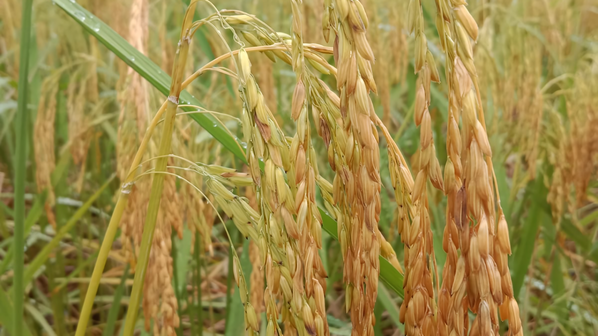

Ikon Beras Aromatik Berkualitas Tinggi

Cianjur, Jabar
Pulen Lengket
Pandan Kuat
120 Hari
Pandan Wangi adalah ikon beras bermutu tinggi asli dari daerah Cianjur, Jawa Barat. Ciri khas paling menonjol dari varietas padi ini adalah aroma daun pandan yang menyengat secara alami. Bentuk gabahnya cenderung membulat dengan warna yang sedikit kekuningan.
Nasi yang dihasilkan sangat pulen dan sedikit lengket. Iklim spesifik di Cianjur dipercaya berkontribusi pada keunikan rasa dan aromanya yang tidak bisa ditiru jika ditanam di daerah lain.
⬅ Kembali ke Daftar Padi